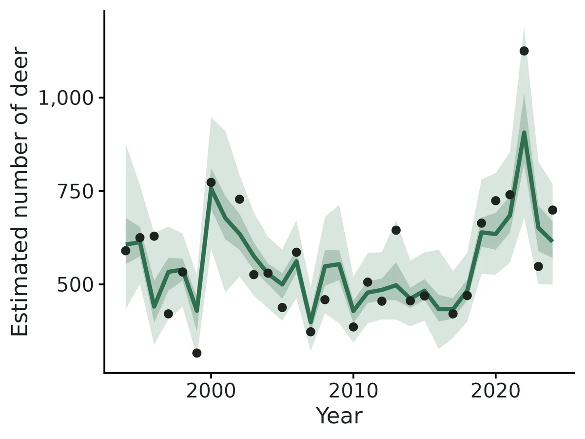
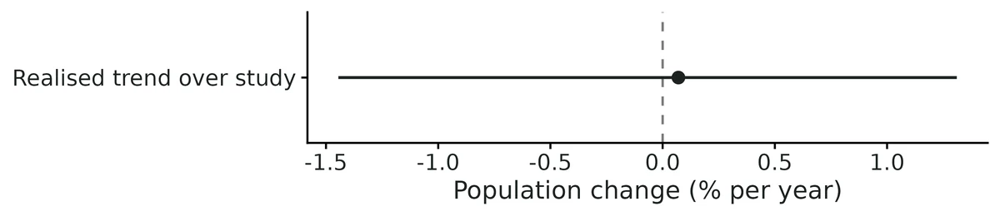
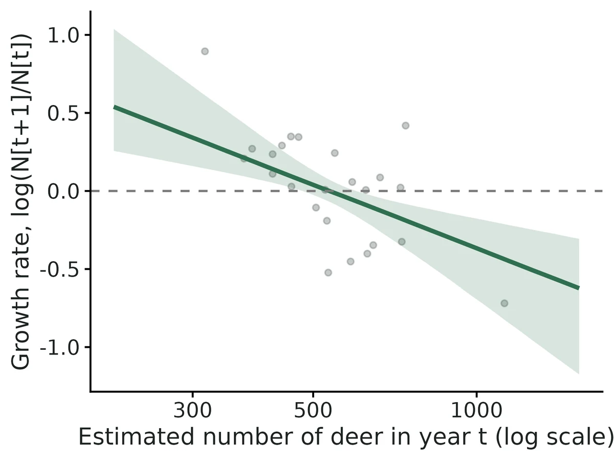
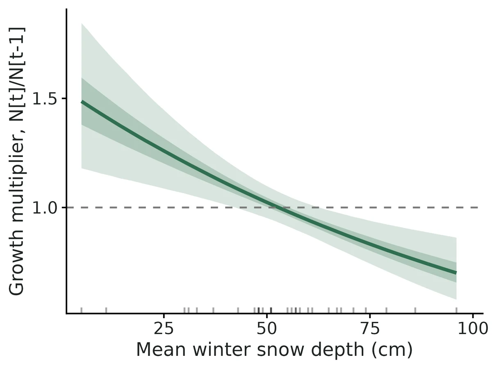

Population time series - trends, density dependence and drivers of growth (state-space models)
"Is my population declining, how fast, and what drives good and bad years?" Annual counts bounce for two different reasons: the population really changes (births, deaths, a hard winter: process noise) and the count misses or double-counts animals (observation error). State-space models separate the two. That matters because
Is this the right analysis?
Use it when
One count or abundance index per year (aerial/ground counts, nest counts, redd counts, CPUE, BBS-style route totals) for one population or several sub-populations, 10+ years; the question is whether the population is increasing or declining and by how much per year, how large it really is once counting error is removed, whether growth is density dependent, whether a covariate (winter severity, harvest, drought) is associated with good and bad years, and how many years of monitoring are needed to detect a decline.
Not for
Repeated counts within a season at many sites (use nmixture, which estimates detection); marked animals (cjs / jolly-seber / ipm give vital rates); detection/non-detection (occu-*); age- or stage-structured projections and extinction risk (pva); series shorter than ~8 years (no model can separate process from observation error).
The data you need
CSV with one row per year (per site): year, count or index, optional site/herd column, optional yearly covariates; years not surveyed may be blank or absent.
What the example's main data file looks like:
| year | survey | animals_counted | snow_depth_cm | notes |
|---|---|---|---|---|
| 1994 | aerial winter count | 590 | 83 | |
| 1995 | aerial winter count | 625 | 48 | |
| 1996 | aerial winter count | 629 | 96 | |
| 1997 | aerial winter count | 421 | 33 | |
| 1998 | aerial winter count | 533 | 51 |
Not sure? Use the finder to compare modules.
The worked example
Is a mule deer herd declining, and do deep-snow winters reduce its growth? (Bayesian state-space model, simulated data)
The question: Is the herd declining and by how much per year, how many deer are really there once counting error is removed, is growth density dependent, and do deep-snow winters reduce herd growth?
The data are simulated, so the true answer is known and the analysis can be checked against it.
What the researcher typed
I've attached herd_counts.csv: aerial winter counts of our mule deer herd, 1994-2024, with mean winter snow depth from the snow course. Three winters weren't flown. Please tell me whether the herd is declining and by how much per year, how many deer there really are, whether growth is density dependent, and whether deep-snow winters reduce herd growth. I don't code, so please give me a report with figures I can use in a paper.
Run it yourself
Download the example data below and unzip it.
Open the unzipped folder in Claude Code (see Install).
Paste the prompt above. The agent checks the files, writes a plan, runs planted truth, fits the model and writes the report. You can compare your results with the ones below.
Contains herd_counts.csv, the settings file (config.yaml), a description of the data and a step-by-step walkthrough.
Study design details
| n populations | 1 |
|---|---|
| n years | 31 |
| first year | 1994 |
| last year | 2024 |
| years counted | 28 |
| years not flown | 3 |
| missing years | 2001, 2009, 2016 |
| n covariates | 1 |
| covariate | snow_depth_cm |
| model | bayes (Gompertz density dependence + covariate on growth) |
| data seed | 20 |
Results from the example data

In plain language
- The estimated true population changed by +0.1% per year on average between 1994 and 2024 (95% credible interval -1.4% to +1.3%).
- Estimated true abundance (on the scale of the animals counted) in 2024: 614 (95% credible interval 499 to 768). If counts miss a constant fraction of animals this is an index of abundance, not a census.
- Equilibrium abundance (where growth averages zero, at average covariates): 536 (95% credible interval 478 to 599).
- An increase of one standard deviation (20) in Mean winter snow depth (cm) is associated with a -15.3% change in the annual growth multiplier (95% credible interval -22.2% to -7.0%; P(effect > 0) = 0.00). At average abundance the population is expected to change by +19.9% in a year with snow depth at its 10th percentile (30.9 cm) vs -16.4% at its 90th percentile (74.5 cm). This is an association, not proof that snow depth causes the change.
- Counting error (observation SD 0.18, 95% CI 0.03-0.28) is estimated to be larger than real year-to-year variation (process SD 0.10, 0.00-0.26), so single year-to-year changes in raw counts should not be read as real population changes.
- Because the prior allows only b between -2 and 0, the credible interval for b can never include 0, so it is not evidence that density dependence exists; b from a single count series is overestimated (here -0.59 vs true -0.30).
- Posterior predictive check: the variability (Bayesian p = 0.61) and lag-1 autocorrelation (p = 0.75) of year-to-year changes match the observed counts, so there is no sign of misfit.
- Formal test for density dependence (Gompertz parametric-bootstrap likelihood ratio, 199 simulated series): p = 0.585; the counts are consistent with density-independent growth, but this test has little power.
More figures



Figures are the module's default publication figures, reduced for the web. The report also saves them as PDF and full-resolution PNG.
Planted truth at the example's design
Before trusting the example's results, the module was run on many simulated data sets with the same design and known true values. Each row is one quantity: did the method get it back? (What the thresholds are.)
What OPEN means here. The module works (it passes at its default design), but at this example's design not every quantity passed the planted-truth check, so CascadiaTools does not certify those. 5 of the 8 quantities checked passed outright. For density dependence b, sd process, sd observation, the estimate was biased (by up to 59%); don't interpret those at this design. The quantities that passed can be used as reported. With your own data, the report would say the same and suggest what would help: more data, a simpler model or a different estimator. More on DONE and OPEN.
Why, for this example:
Estimand-specific. Trend, N_final, equilibrium_N and the snow effect pass planted truth (bias <= 4.2%, coverage 0.94-0.97), convergence (R-hat <= 1.006, ESS >= 684) and the PPC, and can be reported. Density dependence b (-59% bias), process SD (+23%) and observation SD (-13%) fail planted truth at this design, so the researcher's density-dependence question is not answered.
5 of 8 rows pass.
| Quantity | True value | Average estimate | Bias | Coverage | Result |
|---|---|---|---|---|---|
| growth_beta_snow_depth_cm | -0.15 | -0.156 | -4.2% | 0.97 | ✓ PASS |
| growth_effect_pct_snow_depth_cm | -13.9 | -14.4 | -3.5% | 0.97 | ✓ PASS |
| N_final | 517.3 | 526.9 | +1.6% | 0.96 | ✓ PASS |
| equilibrium_N | 500 | 503.8 | +0.8% | 0.96 | ✓ PASS |
| realised_trend_pct_per_year | 0.118 | 0.121 | -155.9% | 0.94 | ✓ PASS |
| density_dependence_b | -0.3 | -0.476 | -58.6% | 0.89 | ✗ FAIL |
| sd_process | 0.1 | 0.123 | +23.1% | 0.98 | ✗ FAIL |
| sd_observation | 0.15 | 0.13 | -13.4% | 0.99 | ✗ FAIL |
Limits that matter
- Density dependence is not recoverable from a single count series (Knape 2008): b biased -59% at this design; in bayes the U(-2,0) prior means its interval never contains 0.
- Process and observation SDs are biased (+23% and -13% here); trend and abundance intervals remain valid.
- Constant detection is assumed: herd size is an index on the count scale, and a change in sightability would look like a trend.
- 'No clear trend' is weak evidence: a single series declining 5%/yr is detected with power 0.29 after 20 years and 0.49 after 30.
- Bayes density-dependence fits can mix slowly: 7% of fast-setting replicates missed the convergence rule; the real fit (4 x 40,000) had min ESS 684.
- Covariate effects are associations, not causes.
- The Gompertz bootstrap test of density dependence holds its false-positive rate but has 2-6% power at b = -0.3.
All known limits from the module's validation record
- Variance components from one series. sd_process is biased (REML -17% at 25 yr; Bayes +31%) and sd_observation is biased in the Gompertz and Bayes models. Trend and abundance intervals stay valid. Pooling sites (
marss) or an independent estimate of counting error (prior_sd_observation) fixes it. Density dependence is not recoverable from a single count series (Knape 2008; Auger-Methe et al. 2016). Point estimates of b are overestimated by 30-140% depending on length and engine. The profile interval for b excludes 0 in 47% of series without density dependence.
- The bootstrap LRT holds its size (0.04-0.07) but has almost no power at 15 years.
- In
bayesthe U(-2, 0) prior means the interval for b never contains 0. - The interpretation text states all of this.
- equilibrium_N (Gompertz ML) is undefined when b is near 0. The mean of the MLEs is dominated by huge values and coverage is 0.889 at 30 yr. The report suppresses K when its interval spans more than a 20-fold range.
- Trend intervals are conservative. The false-positive rate is 0.025, and coverage is 0.97-1.0 below 20 years. Power is therefore lower than with plug-in intervals, which are invalid (coverage 0.81).
process_cov: equalvarcov(MARSS EM) converged in only 75% of replicates. Treat process_corr as exploratory.loglinearwith 3 sites x 10 years: 14.5% of fits have a singular Hessian. It also does not separate process from observation error.- Constant detection is assumed. Abundance is on the count scale, and a trend in detectability is indistinguishable from a population trend.
- The importance sampler for ML abundance intervals can have low ESS (<200) for Gompertz fits with a strongly curved likelihood. The fit then adds a note.
- Bayes DD fits mix slowly when b is poorly identified. In the 60-year cross-check, minimum ESS was 188 at 4 x 40,000 iterations; the report flags runs below ESS 400.
- REML trend intervals are very conservative when counting error dominates. At 20 years with sd_process 0.06 and sd_observation 0.25, a +4%/yr trend was never detected (power 0.000, false-positive rate 0.000, coverage 1.000), whereas GLS with the true variances would detect it in 60% of series. The intervals are valid but can be about 3x wider than necessary; see "Independent verification". The report now says that "no clear trend" is not evidence of stability and points to a power analysis.
loglineartrend intervals are too narrow when the population itself wanders (random walk with drift plus counting error): coverage 0.825 at 4 sites x 25 years. The report warns when the fitted AR(1) correlation exceeds 0.9 and always says to compare withmarss/exponential.
Engine, references and full details
Engine: hand-written REML / Kalman-filter maximum likelihood (exponential, Gompertz, multi-site default); MARSS package (other multi-site structures); nimble MCMC (Bayesian with covariates and missing years); glmmTMB (log-linear trend with AR(1), comparison).
References
- Dennis B, Taper ML (1994) Density dependence in time series observations of natural populations: estimation and testing. Ecological Monographs 64:205-224.
- Dennis B, Ponciano JM, Lele SR, Taper ML, Staples DF (2006) Estimating density dependence, process noise, and observation error. Ecological Monographs 76:323-341.
- Shenk TM, White GC, Burnham KP (1998) Sampling-variance effects on detecting density dependence from temporal trends in natural populations. Ecological Monographs 68:445-463.
- Knape J (2008) Estimability of density dependence in models of time series data. Ecology 89:2994-3000.
- Auger-Methe M, Field C, Albertsen CM, Derocher AE, Lewis MA, Jonsen ID, Mills Flemming J (2016) State-space models' dirty little secrets: even simple linear Gaussian models can have estimation problems. Scientific Reports 6:26677.
- Humbert J-Y, Mills LS, Horne JS, Dennis B (2009) A better way to estimate population trends. Oikos 118:1940-1946.
- Staples DF, Taper ML, Dennis B (2004) Estimating population trend and process variation for PVA in the presence of sampling error. Ecology 85:923-929.
- Holmes EE, Ward EJ, Wills K (2012) MARSS: multivariate autoregressive state-space models for analyzing time-series data. The R Journal 4(1):11-19.
- Holmes EE, Scheuerell MD, Ward EJ. Analysis of multivariate time series using the MARSS package (MARSS User Guide). NOAA Fisheries, Seattle.
- Kery M, Schaub M (2012) Bayesian Population Analysis using WinBUGS. Academic Press, ch. 5.
- Auger-Methe M, Newman K, Cole D, et al. (2021) A guide to state-space modeling of ecological time series. Ecological Monographs 91:e01470.
- Brooks ME, Kristensen K, van Benthem KJ, et al. (2017) glmmTMB balances speed and flexibility among packages for zero-inflated generalized linear mixed modeling. The R Journal 9:378-400.
- de Valpine P, et al. (2017) Programming with models: writing statistical algorithms for general model structures with NIMBLE. J. Computational and Graphical Statistics 26:403-413.
- Harvey AC (1989) Forecasting, Structural Time Series Models and the Kalman Filter. Cambridge University Press.